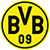
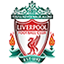
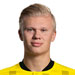
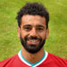

سَنتر
إشتراك
تسجيل دخول
سَنتر
إشتراك
تسجيل دخول
سَنتر
إشتراك
تسجيل دخول
سَنتر
إشتراك
تسجيل دخول
تُوج نادي تشيلسي بلقب دوري أبطال أوروبا في نهائي إنجليزي، مساء السبت، بعد الفوز على منافسه مانشستر سيتي، وذلك بهدف مقابل لا شيء.
وسجّل كاي هافيرتز هدف التقدم لتشيلسي في الدقيقة 42 من زمن المباراة، بعد تمريرة سددها في شباك مانشستر سيتي.
وكان تشيلسي أكثر خطورة خلال أحداث المباراة، رُغم إهدار مانشستر سيتي العديد من الفرص، لا سيما التي جاءت خلال الدقائق الأخيرة
خاصة محاولات رياض محرز وفبل فودين وغابرييل خيسوس. وشهدت المباراة تألقًا لافتا لدفاع البلوز.
وهي المرة الثانية التي ينجح فيها تشيلسي في الفوز بدوري أبطال أوروبا، وسبق أن أحزر لقب البطولة في 2012.
وكان متاحًا حضور الجمهور في ملعب بورتو بالبرتغال حيث قُدر أن يتخطى عددهم 16 ألف مشجع.حقق توماس توخيل الذي تم تعيينه مديرًا للبلوز في يناير كانون الثاني .
أول لقب له في دوري أبطال أوروبا. كما قاد المدرب الألماني باريس سان جيرمان إلى نهائي الموسم الماضي.
وتم صنع التاريخ يوم السبت عندما دخل كريستيان بوليسيتش بديلا لتياغو سيلفا ليصبح أول أمريكي يلعب في نهائي دوري أبطال أوروبا .
وأصبح أول أمريكي يفوز بدوري أبطال أوروبا أيضًا وصنع إدوارد ميندي لاعب تشيلسي التاريخ أيضًا ليصبح أول حارس مرمى إفريقي يلعب في نهائي دوري أبطال أوروبا .
شباك ميندي النظيفة هي التاسعة له في 12 مباراة في دوري أبطال أوروبا هذا الموسم ، وهي الأكبر على الإطلاق في موسم واحد.
| الفريق | عدد الاهداف | الدولة | |
|---|---|---|---|
| بايرن ميونخ | 27 هدف | المانيا | |
 |
مانشستر سيتي | 25 هدف | انجلترا |
.png) |
تشيلسي | 23 هدف | انجلترا |
 |
باريس سان جيرمان | 22 هدف | فرنسا |
|  | بروسيا دورتموند | 19 هدف | المانيا |
| الفريق | المباريات | الدولة | |
|---|---|---|---|
|
تشيلسي | 9 مباريات | انجلترا |
|
مانشستر سيتي | 8 مباريات | انجلترا |
|  | ليفربول | 7 مباريات | انجلترا |
 |
بورتو | 6 مباريات | البرتغال |
 |
ريال مدريد | 4 مباريات | اسبانيا |
| اللاعب | الفريق | الاهداف | |
|---|---|---|---|
|  | آرلينغ هالاند | بوروسيا دورتموند | 10 اهداف |
| كيليان مبابي | باريس سان جيرمان | 8 اهداف | |
| نيمار | باريس سان جيرمان | 6 اهداف | |
| موراتا | يوفينتوس | 6 اهداف | |
|  | محمد صلاح | ليفربول | 6 اهداف |
| الاعب | الفريق | الاسيستات | |
|---|---|---|---|
| خوان كوادرادو | يوفنتوس | 6 اسيست | |
| يوزوا كيميش | بايرن ميونخ | 4 اسيست | |
| كيفين دي بروين | مانشستر سيتي | 4 اسيست | |
| أنخيل دي ماريا | باريس سان جيرمان | 4 اسيست | |
| لوكا مودريتش | ريال مدريد | 3 اسيست |
لعبت في البطولة 125 مباراة وتم تسجيل 367 هدف خلال البطولة بمعدل 2.93 هدف لكل ماتش وهدف كل 31 دقيقة .
وكان بايرن ميونخ اكثر الفرق تسجيلا للاهداف باجمالي 27 هدف و كان نادي إسطنبول باشاكشهير اكثر فريق استقبالا للاهداف باجمالي 18 هدف
الفريق الاكثر فوز فالبطولة مانشستر سيتي باجمالي 11 مباراة والاكثر خساره فالبطولة فيرينتسفاروشي باجمالي 5 مباريات .
وتم اشارة 500 بطاقة صفراء خلال البطولة وكان اكثر الفرق حصولا عليها فريق باريس سان جيرمان باجمالي 31 بطاقة ؛وتمت اشارة22 بطاقة حمراء .
وكان اكثر فريق حصولا عليها فريق باريس سان جيرمان باجمالي 4بطاقات حمراء .